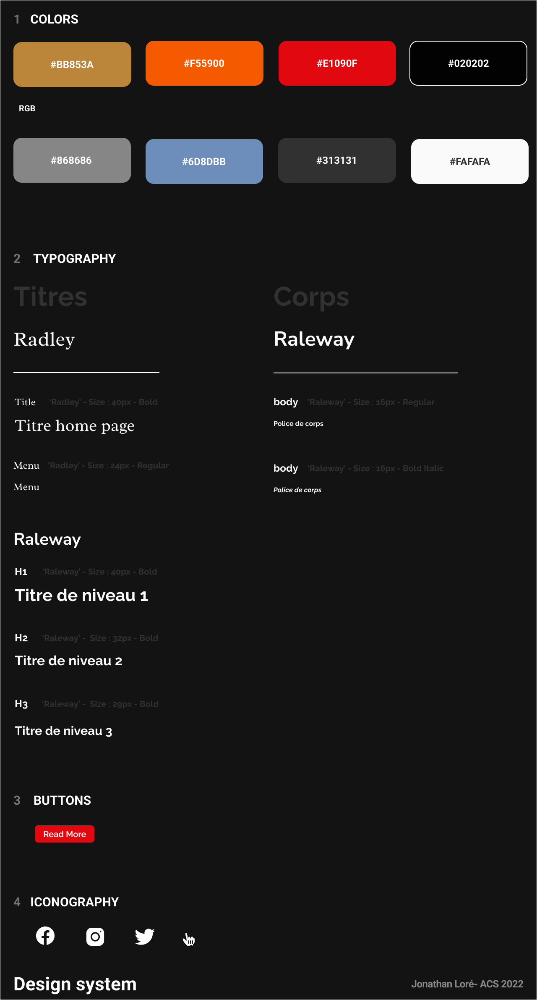
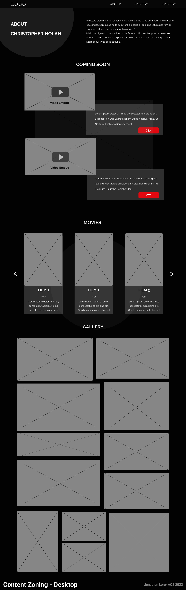
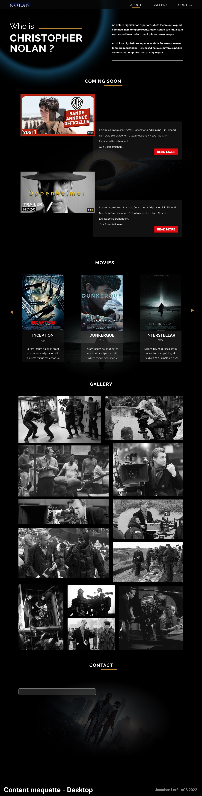
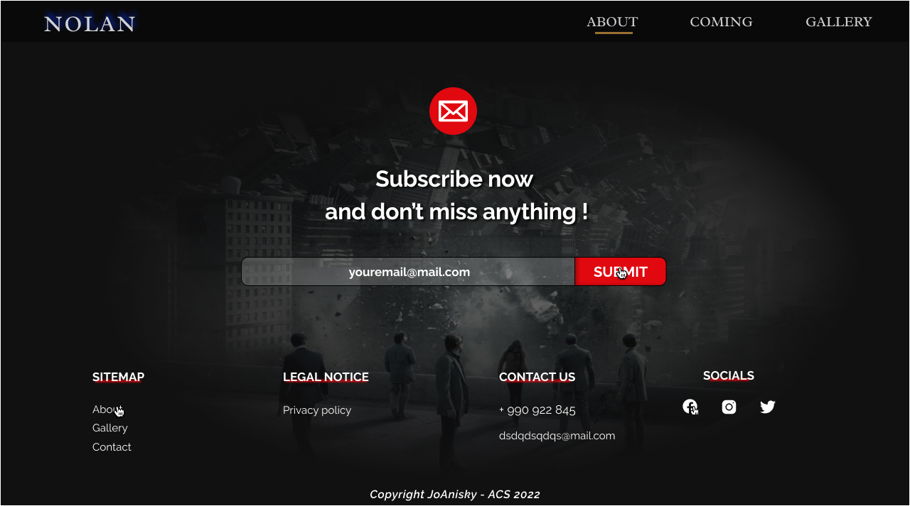
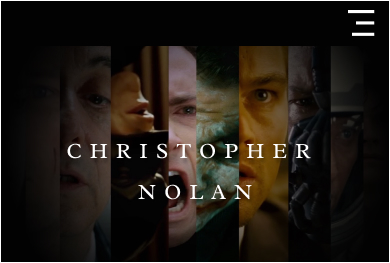
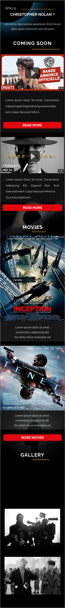
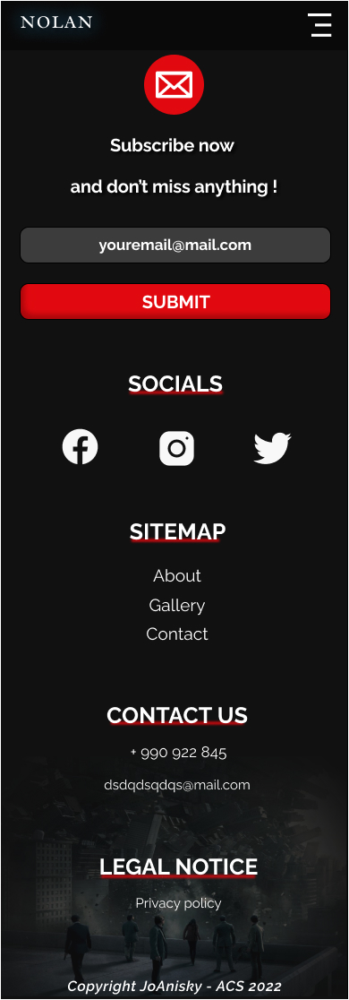

Qui est Christopher Nolan ?
Christopher Jonathan James Nolan est un réalisateur, producteur, scénariste et monteur de cinéma britannico-américain.
Il est né le 30 juillet 1970 à Westminster (Londres).
Il se fait connaitre par un premier long métrage, Following qui a été tourné en noir et blanc et dans lequel il endosse plusieurs casquettes, notamment celles de directeur de la photographie, scénariste et réalisateur.
Le film est présenté en 1998 au festival du film de Toronto.
Il remporte trois prix ce qui va lui permettre de se lancer dans la mise en scène du script présenté à Newmarket Films : Memento.
Ce dernier a totalisé près de 40 millions dollars au box-office, c'est un grand succès.
Les films qui l'ont rendu célèbre par la suite sont Memento, The Dark Knight, Inception ou encore Interstellar
Il est cofondateur, avec Emma Thomas sa femme, de sa propre societé de production Syncopy Films.
Son œuvre explore la moralité humaine. Elle se nourrie des préoccupations philosophiques, sociologiques ou éthiques, la construction du temps et la malléabilité de la mémoire et de l'identité personnelle.
Sa societé de production Syncopy Inc. possède un logo :

Constat
Christopher Nolan ne possède ni site web ni réseaux sociaux, il a même dit qu'il n'utilisait pas de téléphone portable.
Il ne déteste pas la technologie mais cela ne l'a jamais interessé et il interdit même l'usage des mobiles sur ses tournages.
C'est son équipe qui s'occupe de gérer sa boite mail et sa femme qui gère toutes les affaires liées à leur maison de production : Syncopy Inc.
JoAnisky est developpeur freelance. Son objectif est de rendre le web facile, moderne et accessible à tous.
La cible du site web :
Le grand public qui apprécie le cinéma.
Tous les fans des films de Nolan et de la science fiction en général.
État des lieux de l’existant
Nolan ne possède aucun site web mais on peut s'inspirer des sites d'autres réalisateurs.
Arborescence du site
News
About
Gallerie d'images de tournage
Formulaire de contact
Description fonctionnelle
Pour faciliter le projet, tout le travail de recherche graphique (Benchmark, moodboard, maquettes etc...) est centralisé dans le fichier Figma "moodboard.fig" Disponible sur Github Benchmark/Moodboard Christopher Nolan.
Benchmark
 Sources :
Sources :
Moodboard

Inspiration


Github > DesignSystem Christopher Nolan.
Proposition de design pour le header




Zoning mobile content

Maquette Mobile Header

Mobile Content

Mobile Footer
